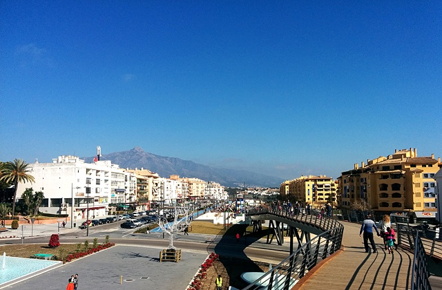

Localización
San Pedro Alcántara es una localidad y distrito del municipio de Marbella, en la provincia de Málaga, en la Comunidad Autónoma de Andalucía, en España. La localidad se encuentra en la parte oeste del municipio de Marbella. Limita con los términos municipales de Estepona y Benahavis por el río Guadalmina al oeste, al norte con el de Benahavís y al este por el río Guadaiza con el distrito de Nueva Andalucía. Se trata de una localidad situada en la vega de San Pedro Alcántara y limita al sur con el Mar Mediterráneo.
